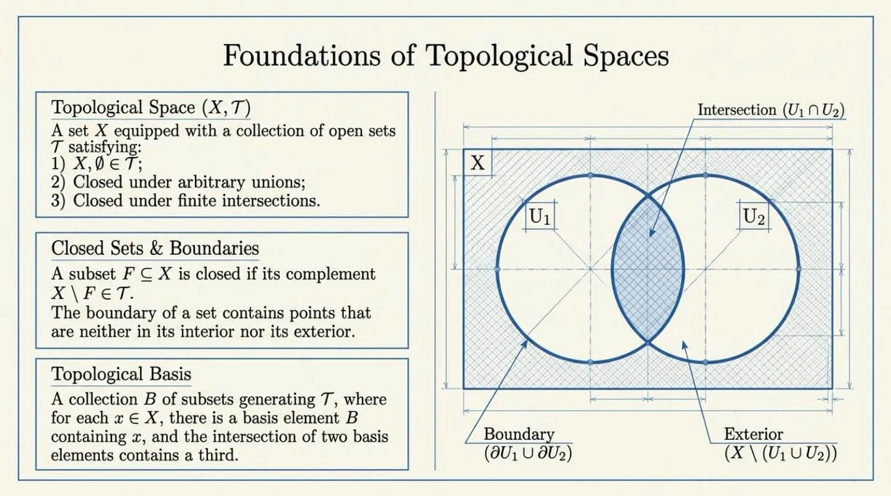

기둥 1 · 점과 이웃 · 03장
기저 — 작은 블록으로 위상 쌓기
열린 집합을 전부 적지 않고 재료만 적는 법
열린 집합을 전부 적지 않고 재료만 적는 법
핵심 질문 — 열린 집합을 하나하나 다 적지 않고, 「재료 블록」만 적어도 위상이 정해질까?
점이 많아지면 열린 집합 목록이 너무 길어져요. 그래서 수학자들은 작은 블록 몇 개만 적고, 「블록을 합친 것은 모두 열린 집합」이라고 약속해요. 그 블록 모음이 기저예요. 단, 아무 블록이나 되는 건 아니에요.
숫자 요약은 이 장의 예시 계산에서 나온 값입니다(실제 데이터가 아닌 설명용 값).
오늘은 조별 과제예요. 블록 상자를 하나씩 나눠 줄게요.
블록 쌓기는 자신 있어요.
행렬·벡터, 복잡한 공식을 몰라도 됩니다. 그림을 움직여 보고, 밑줄 친 말을 누르면 뜻이 나옵니다.
시아기저 조건, 겹친 곳의 점마다…?
모아블록이 뭐가 이렇게 복잡해…
이론 시간. 시아와 모아가 머리를 감싸 쥐었다.
하루레고 좋아하지? 완성품 대신 블록만 있으면 돼.
그때 하루가 박사 몰래 살금살금 다가왔다.
하루열린 집합을 하나하나 다 적으면 너무 많잖아. 그래서 작은 블록 몇 개만 정해 두고 「이걸 합쳐서 만든 건 다 열린 집합」이라고 약속해. 그게 기저야. 단, 블록이 겹치는 곳도 작은 블록으로 채울 수 있어야 해!
하루의 비밀 설명 시간.
시아블록 상자만 있으면 다 만들 수 있구나!
모아겹치는 곳도 블록으로 채워야 하고!
박사는 멀리서 못 본 척 웃었다.
기저 = 열린 집합을 쌓는 재료 블록 상자.
레고 설명서는 완성품을 다 보여 주지 않고 「이 블록들로 만들 수 있다」만 알려 줘요.
기저도 똑같아요. 블록(작은 열린 집합) 몇 개만 정하면, 그걸 합쳐 만든 것은 모두 열린 집합이 돼요. 1개짜리 블록만 있으면 무엇이든 만들 수 있고요.
이 페이지 사용법: 밑줄 친 말을 누르면 뜻이 나옵니다(Esc로 닫기). 단계마다 그림을 직접 움직여 보고, 끝의 확인 퀴즈로 점검하세요. 앞 장: 02 닫힌 집합과 경계 — 안쪽 · 바깥 · 물가
1조 「픽셀조」와 2조 「바람조」가 같은 블록 상자를 받아, 그 블록으로 위상을 쌓을 수 있는지 각자 판정해요. 마지막에 원자료 문장 하나를 두 조가 함께 검사합니다.
1조는 1인실 블록 {1}, {2}, {3}, {4}예요. 합치면 뭐든 만들 수 있어요.
2조는 {1, 2}, {2, 3}, {3, 4}, {2}, {3}이에요. 조금 복잡해요.
블록이 겹치는 자리를 잘 봐. 거기서 일이 꼬여.
점 n개의 이산 위상은 열린 집합이 2ⁿ개지만, 기저는 1인실 블록 n개면 돼요.
수직선의 위상은 「열린 구간」 블록으로, 12장의 픽셀 위상은 「작은 이웃」 블록으로 정해요.
원자료의 기저 정의 문장이 조금 느슨해요. 그 차이를 반례로 확인해요.
블록이 많아 보여도 할 일은 「합쳐 보기」와 「겹친 곳 보기」 두 가지뿐이에요.
상황 질문 — 레고 상자에 큰 블록 없이 「1개짜리 블록」만 4개 들어 있다면, 만들 수 없는 모양이 있을까요?
「블록을 합친 것」이면 블록을 하나도 안 합친 것도 들어가요?
학교 수학으로 보면: 중학교 집합의 합집합이에요. 아무것도 합치지 않은 합집합은 빈 집합 ∅으로 약속해요.
| 식 조각 | 읽는 법 | 뜻 |
|---|---|---|
| B = {B₁, B₂, …} | 기저 비 | 재료 블록 모음 |
| B₁ ∪ B₃ | 비 일 합집합 비 삼 | 블록 두 개를 합친 열린 집합 |
| ∅ | 공집합 | 블록을 0개 합친 것 |
1인실 블록 {1}, {2}, {3}, {4} → 원하는 점만 골라 합치면 어떤 부분집합이든 만들어짐 → 2⁴ = 16개 = 이산 위상
겹치는 구간 블록 {1,2}, {2,3}, {3,4}, {2}, {3} → 합쳐서 나오는 집합 9개
9개를 세 규칙 점검기에 넣으면 통과 → 위상
블록 5개만 적었는데 열린 집합 9개가 다 정해지네요. 1인실 블록 4개는 16개를 정하고요!
1개짜리 레고 블록만 있으면 어떤 모양이든 하나씩 쌓아 만들 수 있어요. 큰 블록만 있으면 못 만드는 모양이 생겨요.
1인실 블록 {x}들은 이산 위상의 기저예요. 블록이 커지면 만들 수 있는 열린 집합이 줄어 더 엉성한 위상이 돼요.
「겹치는 구간 블록」을 눌러 합쳐 나오는 집합 수를 세어 보세요.
블록 5개니까 2⁵ = 32개 나오겠죠!
합치면 같은 집합이 여러 번 나와. {2} ∪ {1, 2}는 그냥 {1, 2}잖아.
원자료 「Foundations of Topological Spaces」의 아래 상자 「Topological Basis」.

상황 질문 — 두 배달 구역이 겹치는 동네 안에 작은 배달 구역 하나가 있다면, 그 겹친 동네의 모든 집이 배달될까요?
「겹친 곳이 블록을 품는다」와 「점마다 블록이 있다」가 그렇게 달라요?
학교 수학으로 보면: 중학교 집합의 「포함 관계 ⊆」와 「원소 ∈」의 차이예요. 블록 하나가 겹친 곳 안에 있어도, 겹친 곳의 다른 원소는 빠질 수 있어요.
| 식 조각 | 읽는 법 | 뜻 |
|---|---|---|
| x ∈ B₁ ∩ B₂ | 엑스는 비 일과 비 이의 겹친 곳에 속한다 | 겹친 곳의 점 하나 |
| x ∈ B₃ ⊆ B₁ ∩ B₂ | 엑스를 담고 겹친 곳에 포함되는 비 삼 | 그 점만을 위한 블록 |
| ⊆ | 포함된다 | 왼쪽 집합이 오른쪽 안에 통째로 들어감 |
블록 {1, 2, 3}, {2, 3, 4}, {3}
겹친 곳 {2, 3}은 블록 {3}을 품음 → 원자료 문장으로는 통과
점 2를 담고 {2, 3} 안에 들어가는 블록? {3}엔 2가 없음 → 없음 → 정확한 조건 실패
실제로 합쳐 나오는 집합: ∅, {3}, {1,2,3}, {2,3,4}, 전체 → {1,2,3} ∩ {2,3,4} = {2,3}이 없어 위상이 아님
문장 하나 차이로 위상이 되고 안 되고가 갈리는군요. 점마다 확인!
두 배달 구역이 겹친 동네 안에 작은 구역이 하나 있어도, 그 구역이 맡지 않는 집은 배달이 안 돼요.
정확한 기저 조건: 블록이 모든 점을 덮고, B₁ ∩ B₂의 모든 점 x에 대해 x ∈ B₃ ⊆ B₁ ∩ B₂인 블록 B₃가 있어야 해요. 그래야 블록의 합집합 모음이 교집합 규칙을 지켜요.
「함정 블록」을 누르고 두 검사의 결과를 비교하세요.
원자료 문장 검사 통과! 기저 맞네요!
아래 줄을 봐. 정확한 조건은 실패고, 위상도 안 만들어져.
원자료 「Topological Basis」 문장: 「두 기저 원소의 교집합이 세 번째 원소를 포함한다」.
X1이 AI에게 블록 {1, 2, 3}, {2, 3, 4}, {3}을 주고 「이건 기저인가요?」라고 물었어요.
AI는 자주 보이는 문장으로 판정해요. 정의에 「각 점마다」가 숨어 있는지, 작은 예를 하나씩 대입해 확인하세요.
블록 {1,2}, {2,3}, {3,4}, {2}, {3}을 합쳐 만들 수 있는 집합(∅ 포함)이 몇 개인지 계산배틀이 붙었어요.
「같은 게 겹쳐 나오니까 32개보다 적어. 9개.」
「블록 5개, 넣거나 빼거나 2⁵ = 32개!」
누가 맞을지 먼저 예상해 보고 단추를 누르세요. 판정은 계산 결과로만 합니다.
개념정리 흐름: 기저로 위상 만들기 → 기저의 조건
| 개념 | 한 줄 뜻 | 일상 비유 | 비유의 한계 |
|---|---|---|---|
| 기저 | 합쳐서 모든 열린 집합을 만드는 블록 모음 | 레고 블록 상자 | 같은 위상에 기저가 여러 개일 수 있어요 |
| 조건 ① 덮기 | 모든 점이 어떤 블록에 들어 있다 | 모든 집이 어느 배달 구역에 속함 | — |
| 조건 ② 점마다 | 겹친 곳의 점마다 그 점을 맡는 작은 블록 | 집마다 맡는 작은 구역 | 원자료 문장은 이 「점마다」를 빠뜨렸어요 |
조별 과제 결과: 두 조 모두 통과, 그리고 함정도 함께 찾았어요.
블록 쌓기, 생각보다 꼼꼼해야 하네요.
32개라고 한 건 잊어 주세요…
다음 장 예고: 04장은 찬반 토론이에요. 1인실 블록으로 쌓은 이산 위상과, 블록이 전체 하나뿐인 밀착 위상이 맞붙어요.